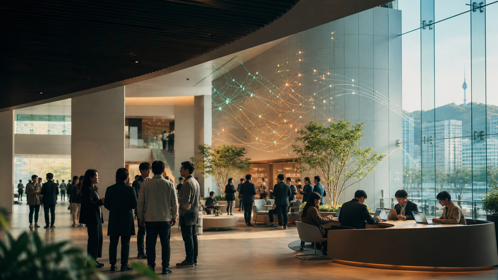

開催日程
プログラムには、基調講演2件、研究セッション3件、パネル討論、懇親会が含まれます。開会は12月12日09:00、昼食・グループミーティングの終了は12月13日17:00です（KST）。
プログラムを見る
日韓（韓日）データベースワークショップは、日本、韓国、および近隣の研究コミュニティの研究者が、データベースと関連技術の最新の研究活動を共有する年次合同ワークショップです。
KJDB 2026は、データ管理、AI、情報検索、データマイニング、新たなデータベースシステムの分野において、活発な議論、初期段階の研究交流、共同研究の伝統を受け継ぎます。
プログラムには、基調講演2件、研究セッション3件、パネル討論、懇親会が含まれます。開会は12月12日09:00、昼食・グループミーティングの終了は12月13日17:00です（KST）。
プログラムを見るソウル滞在に向けて、空港からのアクセス、地下鉄の出口、ホテルの写真、予約案内をご確認ください。
アクセスを確認 会場ホテルを見る参加登録を受け付けています。参加資格、発表、使用言語については、組織委員会にお問い合わせください。
お問い合わせ先を見るプログラム更新：12月12日の昼食（12:00–13:00）はPanorama Lounge & Bar、23階でのランチビュッフェ、懇親会（19:00–21:00）はFirst Floor、1階でのディナービュッフェとなります。